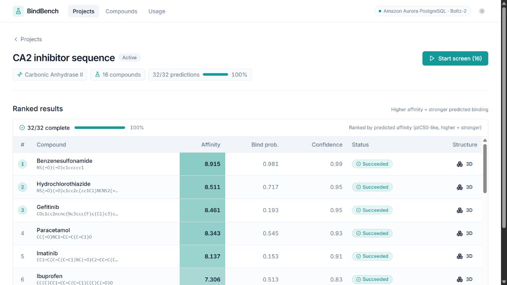
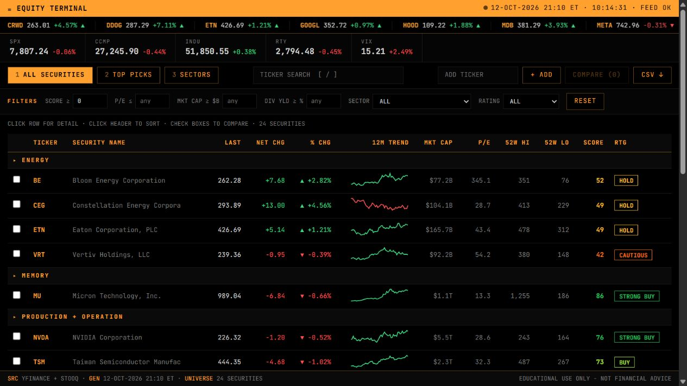
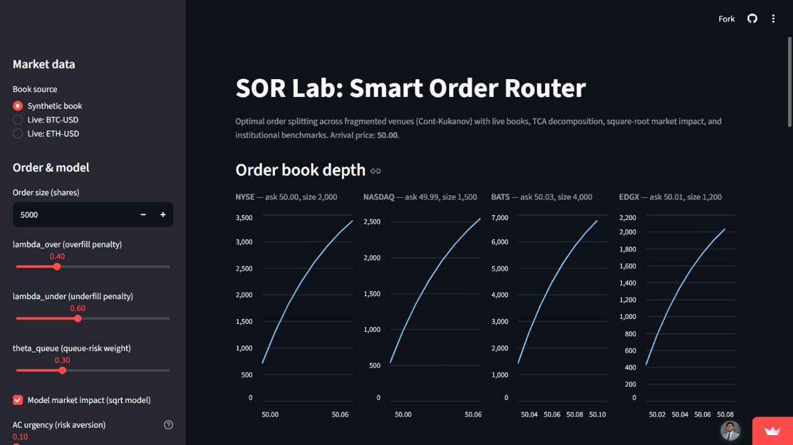

AI & BIOTECH 01 / 05
BindBench
From compounds
to candidates.
A screening workbench that turns protein targets and compound libraries into a ranked, reviewable shortlist.
- Next.js
- TypeScript
- PostgreSQL
- Boltz-2

SOFTWARE ENGINEER & CURIOUS BUILDER
Thoughtful code.
Useful things.
I build AI applications, fintech tools, and real-time systems. From the first idea to the details you can feel.
Open to software engineering opportunities
Scroll to explore my work01 SELECTED WORK
Different problems. The same care
for what happens under the surface.
AI & BIOTECH 01 / 05
From compounds
to candidates.
A screening workbench that turns protein targets and compound libraries into a ranked, reviewable shortlist.


FINTECH & DATA 02 / 05
Market noise, organized. A stock screener combining valuation, financial health, and momentum in one interface.

QUANT & REAL-TIME SYSTEMS 03 / 05
One order. Many possible paths. An interactive lab for exploring how a smart router allocates orders across trading venues.
ALSO ON THE WORKBENCH
A provider-based market data API with PostgreSQL persistence and optional Kafka streaming.
Questions, summaries, and quizzes from your notes, with answers linked back to their sources.
02 THE APPROACH
I like owning the whole journey.
The data, the logic, the interface,
and the moment it all comes together.
Start with a person and a need. Understand what would make their work easier.
Get the data, model, and core behavior working together before adding layers.
Turn complex behavior into an interface that makes the next step clear.
Deploy it, document the decisions, and keep improving the experience.
03 WHAT’S NEXT?
Have a role, a project, or an interesting problem?
I’d love to hear about it.
A little joy, tucked away.
AI & BIOTECH
A clearer path from protein targets to a ranked compound shortlist.
Small biotech labs need a usable way to explore structure-based screening without assembling their own ML infrastructure.
A typed Next.js workflow connects protein targets and compound libraries to Boltz-2 prediction jobs. Results surface as a ranked table with affinity, confidence, and individual job status. Drizzle manages the PostgreSQL schema, with pgvector supporting vector data.
Create a project, add compounds, run a screen, and review the candidates. A mock mode makes the workflow explorable without API costs. Predictions support prioritization; they do not replace experimental validation.
FINTECH & DATA
A research interface that makes market data easier to compare.
Valuation, financial health, and momentum are more useful when you can inspect them together instead of jumping between disconnected views.
A Python data pipeline feeds a static JavaScript interface deployed on GitHub Pages. The terminal scores a universe of 24 equities and provides a market monitor, screening filters, sortable tables, and security-level model breakdowns.
Filter the universe, compare securities, inspect the underlying factors, and export the results. The project is an educational research tool.
QUANT & REAL-TIME SYSTEMS
An interactive view into the choices behind order execution.
Splitting an order across trading venues involves competing costs and execution risks. A useful lab makes those tradeoffs visible.
A Python and NumPy optimizer applies the Cont-Kukanov cost model and compares its allocation against TWAP, VWAP, and Best-Ask baselines. Kafka supports the market data streaming pipeline.
A Streamlit interface lets you adjust venue books and risk parameters, run the allocation, and inspect the comparison.